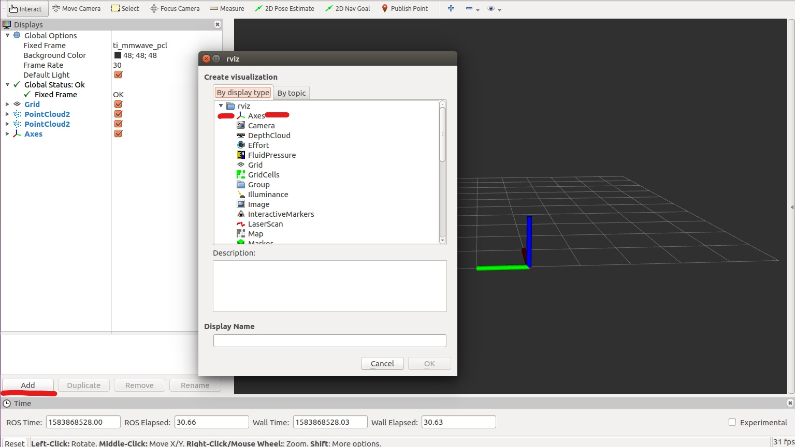
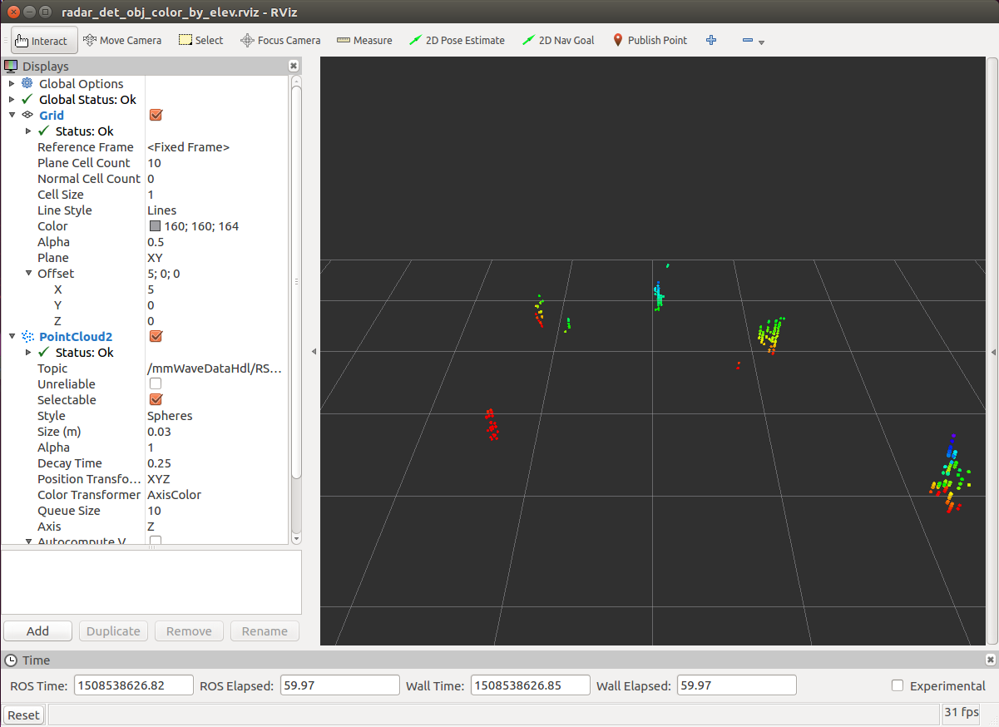
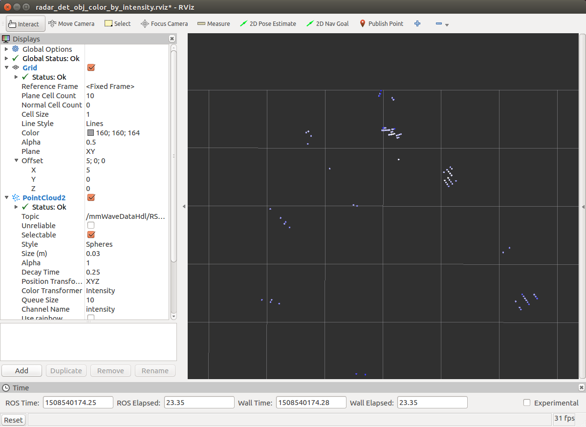
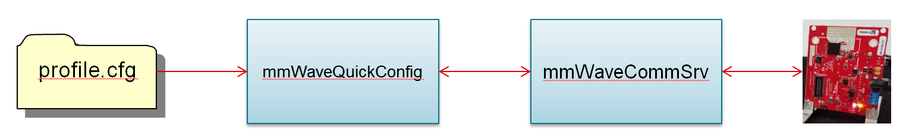
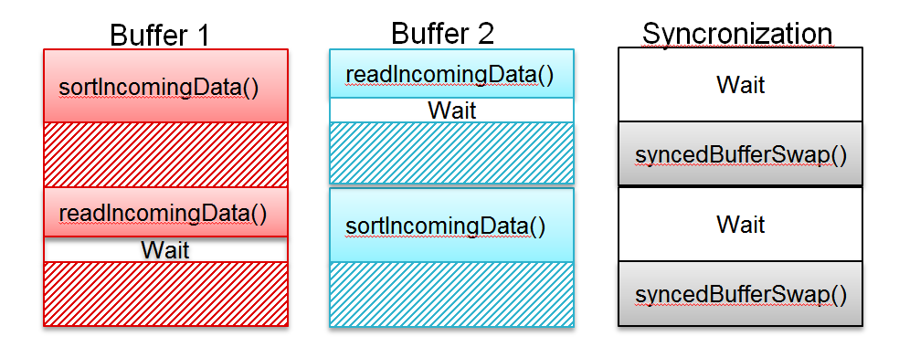
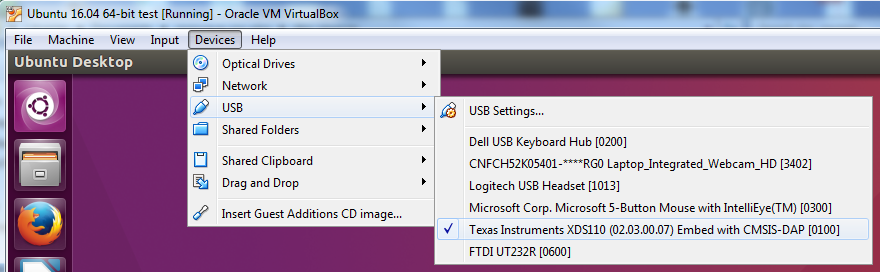
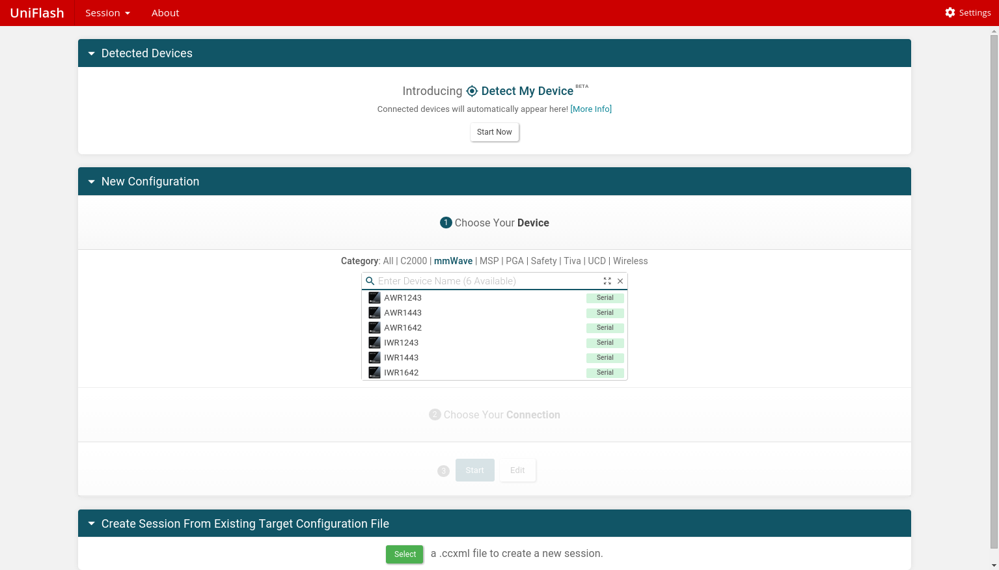
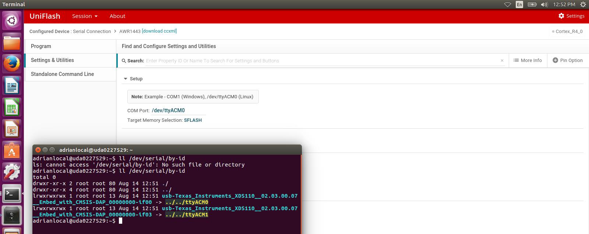
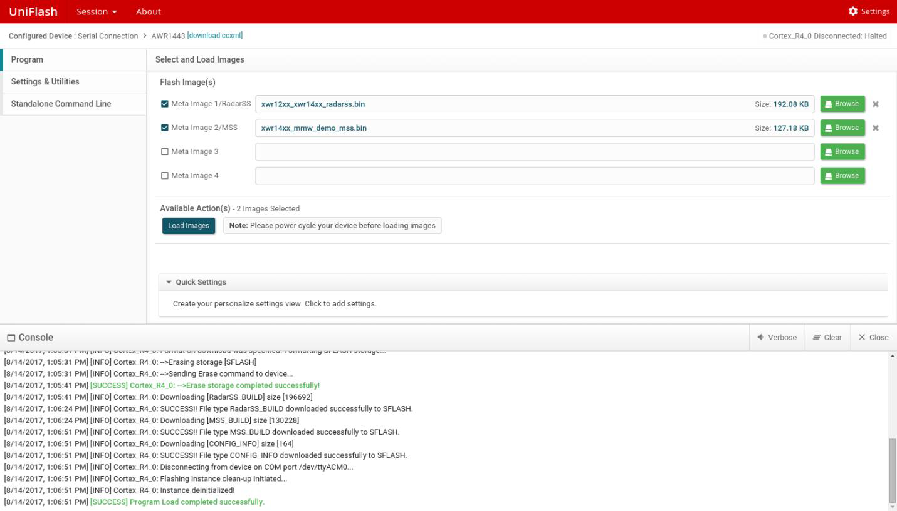

## TI mmWave ROS Driver
--------------------------
## Purpose
This document exists to aid TI mmWave Evaluation Module (EVM) users who wish to leverage the Robot Operating System (ROS) framework for their applications.
## Objectives
- Bring up ROS on a Linux machine
- Build the ti_mmwave_rospkg package in the ROS workspace
- Launch the ti_mmwave_rospkg node to start the mmWave EVM
- Visualize the Radar point cloud using Rviz
- Reconfigure the mmWave EVM with mmWaveQuickConfig node (optional)
## Requirements
### Prerequisite
[[y! Run Out of Box Demo
Before continuing with this lab, users should first run the out of box demo for the EVM.
This will enable users to gain familiarity with the sensor's capabilities as well as the various tools used across all labs in the mmWave Industrial Toolbox. ]]
### Required and Supported mmWave Evaluation Modules (EVM)
#### ISK module with MMWAVEICBOOST
Quantity | Item
------------------|-----------------
1 | Antenna Module Board: [IWR6843ISK](http://www.ti.com/tool/IWR6843ISK)
1 | OPTIONAL: [Industrial mmWave Carrier Board](http://www.ti.com/tool/MMWAVEICBOOST) for CCS based debugging
OR
#### AOP EVM
Quantity | Item
------------------|-----------------
1 | [IWR6843AOPEVM](http://www.ti.com/tool/IWR6843AOPEVM)
1 | OPTIONAL: [Industrial mmWave Carrier Board](http://www.ti.com/tool/MMWAVEICBOOST) for CCS based debugging
OR
#### 1843BOOST
Quantity | Item
------------------|-----------------
1 | [IWR1843BOOST EVM](https://www.ti.com/tool/IWR1843BOOST)
Unlike the AOP and ISK, the 1843BOOST requires supplemental power through the DC power jack.
[[r! IWR6843 ES2.0 Only
This lab is only compatible with ES2.0 version of IWR6843.
On ISK or ODS, check the device version on your IWR6843 using the on-chip device markings as shown below
1. If line 4 reads `678A`, you have an ES2 device. In this case, this lab is compatible with your EVM.
2. If line 4 reads `60 GHZi`, you have an older ES1 device. In this case, the lab is NOT compatible with your EVM. ES2 IWR6843ISK/IWR6843ISK-ODS boards are orderable from the EVM link above.
<img src="images/iwr6843_silicon_revision.png" width="300"/>
On AOP, the EVM must be Rev F or later. This can be distinguished by the shape of the EVM if it is as shown above.
]]
[[r! AoP ES2.0 EVM only
The IWR6843 AoP version of this lab is only compatible with ES2.0 silicon and the corresponding EVM. Please ensure your EVM is the same as in the below image.
<img src="images/iwr6843aopevm1.png" width="300"/>
]]
### Software
#### Host machine
- Ubuntu 18.04 LTS operating system (native Linux machine preferred but will also work with Linux virtual machine running under Windows 7/Windows 10)
- Robot Operating System (ROS)
- ti_mmwave_rospkg source code
#### MMWAVE EVM
BIN Name | Board | Location
------------------------------|-----------------|-----------
xwr68xx_mmw_demo.bin | IWR6843ISK | `<INDUSTRIAL_TOOLBOX_INSTALL_DIR>\mmwave_industrial_toolbox_<VER>\out_of_box_demo\`<br>`68xx_mmwave_sdk_dsp\prebuilt_binaries\xwr68xx_mmw_demo.bin`
xwr64xxAOP_mmw_demo.bin | IWR6843AOPEVM | `<INDUSTRIAL_TOOLBOX_INSTALL_DIR>\mmwave_industrial_toolbox_<VER>\out_of_box_demo\`<br>`68xx_aop_mmwave_sdk_hwa\prebuilt_binaries\xwr64xxAOP_mmw_demo.bin`
## Compatibility
The ti_mmwave_rospkg source code has been tested with ROS Melodic on an x86_64 machine with Ubuntu 18.04 LTS. It has also been tested under an Ubuntu 18.04 LTS VirtualBox Virtual Machine (VM) under Windows 7 and Windows 10. Please follow all of the instructions in the section titled “Tips for Usage with a Virtual Machine” if you are using an Ubuntu Virtual Machine.
## Why ROS?
The Robot Operating System (ROS) is a flexible framework for writing robot software. It is a collection of tools, libraries, and conventions that aim to simplify the task of creating complex and robust robot behavior across a wide variety of robotic platforms. From a high level perspective the TI mmWave Out-of-Box demo provides these functions:
- Be able to specify desired FMCW Radar chirp profile through command line interface (CLI) on a UART port
- Do 1D, 2D, CFAR, Azimuth and Elevation processing and stream out intensity, relative radial velocity and three spatial coordinates (x,y,z) of the detected objects in real-time.
Because the ROS framework and libraries support point cloud data, ROS is useful for developing and prototyping with the mmWave EVMs for robotics applications.
## Installing ROS
Before installing ROS make sure you have a properly working Ubuntu 18.04 LTS host machine. If you are using an Ubuntu virtual machine please go to the section titled “Tips for Usage with a Virtual Machine” and make sure to read/follow all of the instructions there before continuing.
To install ROS on your machine follow the instructions provided on the following webpage. Please select the full desktop (ros-melodic-desktop-full) version. http://wiki.ros.org/melodic/Installation/Ubuntu
After installation, if you are new to ROS it will be helpful to read and complete the tutorials found at the following link to familiarize yourself with the framework.
http://wiki.ros.org/ROS/Tutorials
## Using the ti_mmwave_rospkg ROS driver
### User permissions
Your user account must be a member of the “dialout” unix group in order to have access to the serial ports on Linux. To check if you are a member of this group run the “groups” command.
If you are already a member of the “dialout” group the output should list “dialout” (in addition to other groups).
If you are not a member of the “dialout” group, run the following command to add your user account to that group and then logout and login to Linux to make the change take effect:
```
$ sudo adduser <your_username> dialout
```
After executing this command please logout and login to Linux so the change will take effect.
### Building the TI mmWave ROS driver
1. The packages for all ROS labs are held on git.ti.com, and no longer hosted through the industrial toolbox. To download the packages, first ensure that git is installed on your computer.
```
sudo apt-get install git
```
2. Next, clone the git repository from git.ti.com.
```
git clone https://git.ti.com/git/mmwave_radar/mmwave_ti_ros.git
```
3. Change directory to the ROS Driver lab. This is the workspace directory.
```
cd mmwave_ti_ros/ros_driver/
```
3. Build the lab.
```
catkin_make
```
4. Source the setup.bash file
```
source devel/setup.bash
```
If all of the installation steps were followed and both ROS environment scripts were sourced, the driver should build successfully and you should see something similar to the following at the end of the output. Your output may look slightly different but it should still show “[100%]”.
[[g! build Successful
[100%] Linking CXX executable /home/username/catkin_ws/devel/lib/ti_mmwave_rospkg/ti_mmwave_rospkg
[100%] Built target ti_mmwave_rospkg Scanning dependencies of target ti_mmwave_rospkg_generate_messages
[100%] Built target ti_mmwave_rospkg_generate_messages
]]
## Running the driver
1. Close all previously opened Terminal windows/shells (since they may have old/stale environment variables)
2. If you are using a brand new TI mmWave EVM, it may come pre-flashed with an older version of the Out-of-Box Demo. Since the ROS driver is only compatible with mmWave SDK version listed in the ROS Driver release notes, the EVM should be re-flashed with the Out-of-Box demo from that version of the mmWave SDK. You will also need to re-flash it if the EVM has been re-programmed with a different flash image or if you are running into issues. You can follow the steps in the section “How do I Re-flash the TI mmWave EVM with Out-of-Box demo?” to re-flash the EVM with the Out-of-Box Demo.
3. For ICBOOST, make sure the SOP2 jumper on the TI mmWave EVM has been removed or switched to off postion and then power it using the 5VDC power supply (which must be rated for at least 2.5Amps) and connect the EVM via USB (port labeled "XDS110 USB" on the MMWAVEICBOOST) to your host machine.
4. If you are using an Ubuntu virtual machine (VM) running under Windows, whenever you connect or power-cycle the mmWave EVM you will need to enable the VM to access the mmWave EVM serial ports by going to the Devices menu along the top of the VM window, going to Devices->USB and selecting the Texas Instruments XDS110 option as shown in the picture in the “Tips for usage with an Ubuntu Virtual Machine” section. This is not necessary for native Linux machines.
5. Open a new Terminal window/shell. If you did not add the commands to source the two ROS environment scripts used during the “Setup a ROS Workspace” section to your ~/.bashrc file, then they should be manually sourced now using the following commands (make sure to change `<workspace_dir>` to your actual workspace directory):
```
$ source /opt/ros/melodic/setup.bash
```
```
$ source <workspace_dir>/devel/setup.bash
```
6. Launch the TI mmWave ROS node and Rviz visualizer as follows. (Please note that the roslaunch command will automatically start a “roscore” ROS master process if there is not one started already.)
**For the TI mmWave 6843AOP or 6443 EVM use one of the following commands:**
3-D configuration with elevation info:
```
$ roslaunch ti_mmwave_rospkg 6843AOP_multi_3d_0.launch
```
To add the second EVM in 3-D configuration, open a new terminal and enter the command:
```
$ roslaunch ti_mmwave_rospkg 6843AOP_multi_3d_1.launch
```
2-D configuration without elevation info:
```
$ roslaunch ti_mmwave_rospkg 6843AOP_multi_2d_0.launch
```
To add the second EVM in 2-D configuration, open a new terminal and enter the command:
```
$ roslaunch ti_mmwave_rospkg 6843AOP_multi_2d_1.launch
```
**For the TI mmWave 6843 EVM use one of the following commands:**
3-D configuration with elevation info:
```
$ roslaunch ti_mmwave_rospkg 6843_multi_3d_0.launch
```
To add the second EVM in 2-D configuration, open a new terminal and enter the command:
```
$ roslaunch ti_mmwave_rospkg 6843_multi_3d_1.launch
```
2-D configuration without elevation info:
```
$ roslaunch ti_mmwave_rospkg 6843_multi_2d_0.launch
```
To add the second EVM in 2-D configuration, open a new terminal and enter the command:
```
$ roslaunch ti_mmwave_rospkg 6843_multi_2d_1.launch
```
**For the TI mmWave 1843BOOST EVM use one of the following commands:**
3-D configuration with elevation info:
```
$ roslaunch ti_mmwave_rospkg 1843_multi_3d_0.launch
```
To add the second EVM in 2-D configuration, open a new terminal and enter the command:
```
$ roslaunch ti_mmwave_rospkg 1843_multi_3d_1.launch
```
2-D configuration without elevation info:
```
$ roslaunch ti_mmwave_rospkg 1843_multi_2d_0.launch
```
To add the second EVM in 2-D configuration, open a new terminal and enter the command:
```
$ roslaunch ti_mmwave_rospkg 1843_multi_2d_1.launch
```
[[d NOTE:
The EVM must be power cycled or reset when switching from a 3-D configuration to a 2-D configuration (or from 2-D to 3-D). Otherwise, it will produce an error and stop working until it has been power cycled or reset.
]]
After up to 20 seconds the LED (labeled ‘GPIO_2’ on the 6843 EVM) should light up (or pulse off then on if it was already lit up) and you should start seeing points being displayed in the Rviz visualizer window as shown in the pictures in the “Visualizing the Data” section. To stop the roslaunch command press CTRL-C in the Terminal window.
If the mmWave EVM was not running the Out-of-box demo firmware or did not successfully connect to the PC via the default Linux serial ports (/dev/ttyACM0 and /dev/ttyACM1) the command above will produce errors in the Terminal window and you will not see any points in the Rviz visualizer window. You will need to press CTRL-C in the Terminal window to stop the roslaunch command.
In case the EVM was not in a good state, try resetting the EVM by pressing the ‘NRST’ button on the EVM and then run the desired roslaunch command again.
You can check that the mmWave EVM is connected and that both COM ports show up using the command
```
ll /dev/serial/by-id
```
from a Linux Terminal window as shown in the following image.
<img src="images/COM_Ports.png" class="img-responsive"/>
If you are already using the default (/dev/ttyACM0 and /dev/ttyACM1) ports for a different USB device or the TI mmWave EVM is connected to different ports you can open the file `<$WORKSPACE>/src/ti_mmwave_rospkg/launch/ti_mmwave_sensor.launch` and edit the following lines to use your own serial ports instead of the default ports:
[[b! Setting the serial port
`<param name=“command_port” value=“/dev/ttyACM0” />`
`<param name=“data_port” value=“/dev/ttyACM1” />`
]]
[[b! Setting the serial port with SI Labs transceiver
`<param name=“command_port” value=“/dev/ttyUSB0” />`
`<param name=“data_port” value=“/dev/ttyUSB1” />`
]]
Please see the “Frequency Asked Questions” section for more troubleshooting hints if needed.
7. When running the demo in multi-EVM mode the offset and position of the EVM relative to the other needs to be set. The launch files utilize a static_transform_publisher to keep track of 3D coordinates over time.
static_transform_publisher x y z yaw pitch roll frame_id child_frame_id period_in_ms
X, Y and Z refer to the offset position of the sensor in meters. Yaw, pitch and roll refer to the angle offset of the sensor in radians (yaw is rotation about Z, pitch is rotation about Y and roll is rotation about X). The period in milliseconds specifies how often to send a transform (100 ms = 10 Hz). Set these arguments relative to one another for each of the sensors. For example, use `multi_<sensor>_0` as the baseline (0 0 0 0 0 0) and update the arguments in `multi_<sensor>_1` to describe the position of the second sensor relative to the baseline sensor.
To display the axes, add the axes feature to the map as shown below. This enables the axes display located at the origin of the target frame, red - x green - y blue -z

## Visualizing the data
Once the sensor is running you should see the point cloud displayed in the Rviz visualizer window. The previous roslaunch command will automatically launch Rviz, but it can also be launched manually if needed using the following command in a new Terminal window/shell (after sourcing the ROS environment scripts).
```
$ rosrun rviz rviz
```
- Click Add->PointCloud2
- Select /mmWaveDataHdl/RScan from the “Topic” field dropdown for the PointCloud2 on the left hand panel
The following figure shows an example Rviz window for the 6843 or 6843AOP sensor in a 3D configuration. In the initial perspective shown, the view is setup with the TI mmWave EVM in the back-middle edge of the grid facing toward you. The color of each point is based on its Z-axis elevation relative to the grid. You can move the perspective around by moving the mouse while holding down the left mouse button while the mouse is over the visualizer display. You can zoom in/out using the mouse scroll wheel or by holding down the right mouse button. Holding down the center scroll wheel allows panning.

The previous roslaunch command loads a default Rviz configuration but feel free to modify the visualization settings in the Rviz window as desired. The PointCloud2 point size and shape can be changed by setting the Size (m) parameter and Style parameter. The points can be colored based on elevation (used by default in the 3-D configurations) or by intensity (used by default in the 2-D configurations). Changing the Decay option to a non-zero value will cause Rviz to accumulate and display points over a specified number of seconds (it is set to 0.25 sec in the provided default configurations). Try changing this parameter and note the change in the displayed output.
The following figure shows an example Rviz window for the 6843 or 6843AOP sensor in a 2D configuration. The initial perspective is a top-down (bird’s eye) view with the sensor at the top-middle of the grid facing downward. The color of each point represents the intensity of the reflection where dark blue represents the lowest intensity points displayed and white represents the highest intensity points being displayed. This is configurable in the Rviz settings for the PointCloud2.

### Reconfiguring the chirp profile
At this point, the mmWave EVM will be running one of the selected FMCW Radar chirp configurations provided with the driver. If you would like to reconfigure the mmWave device’s chirp profile with a different set of parameters, you can create a new configuration using the mmWave Demo Visualizer (https://dev.ti.com/mmWaveDemoVisualizer) and save the corresponding cfg file using the “Save Config to PC” button. Make sure the device and mmWave SDK version selected in the GUI match your EVM and Out-of-Box firmware.
It is possible to reconfigure the mmWave sensor after it is already running as long as the previous config used the same number of TX and RX antennas. You can send the configuration to the mmWave device with the following command:
```
$ rosrun ti_mmwave_rospkg mmWaveQuickConfig /path/to/profile.cfg
```
It is also possible to replace the default config so that the new config is loaded when the lab is started (required if the number of TX/RX antennas differs) using the following steps.
- Place the new chirp config file in the “~/catkin_ws/src/ti_mmwave_rospkg/cfg” directory
- Rename the original default config file to a different name
- Rename the new config file to match the original default config file
## How it works
### Nodes
### ti_mmwave_rospkg
This node is a nodelet manager which is loaded with the two nodelets listed below when initiated. It must be instantiated with the parameters listed below.
**Parameters**
command_port : Linux port used for the mmWave User UART port
command_rate: Baud rate for the command_port (115200)
data_port: Linux port used for the mmWave Data UART port
data_rate: Baud rate for the data_port (921600)
**mmWaveCommSrv Nodelet**
This nodelet provides the mmWave UART Command Line Interface as a ROS Service.
- Establishes a ROS Service which receives a CLI command and parameters in the form of a std_msgs::string
- Uses ‘serial’ library (dependency) to open/read a COM port in Linux
- Sends the string out to the mmWave board over UART
- Returns the response from the EVM in the form of a std_msgs::string
- mmWaveQuickConfig node uses this service to load a full .cfg file to the EVM.

**mmWaveDataHdl Nodelet**
This nodelet reads and sorts the incoming radar data from the mmWave EVM.
- Uses ‘serial’ library to read incoming data from the mmWave device via a COM port on Linux
- Multi-Threaded Double Buffered read & sort of incoming packets
1. readIncomingData thread : reads incoming data, looks for start-of-packet signal
2. sortIncomingData thread : sorts the incoming data based off of the package structure sent from the mmWave device
3. syncedBufferSwap thread : when 1) and 2) have finished, swaps data buffers so the sorting thread can operate on new data
- Publishes output as a PointCloud<T> type ROS message

**mmWaveQuickConfig**
This node will read a user specified radar chirp profile line-by-line and send each line to the mmWaveCommSrv nodelet to configure the mmWave EVM.
### Services
mmWaveCLI
#### Requests
Std_msgs::String comm
#### Response
Std_msgs::String resp
### Messages
Sensor_msgs::PointCloud2 /mmwaveDataHdl/RScan
## Frequently Asked Questions (FAQ)
### Tips for usage with an Ubuntu Virtual Machine
Here are some tips when using ROS and the TI mmWave ROS driver with an Ubuntu Virtual Machine (VM).
- The Windows PC should have more than 12GB of free hard drive space to install the VM and all required software on the VM
- The driver was successfully tested using an Ubuntu 18.04 LTS Virtual Machine running under Oracle Virtualbox (www.virtualbox.org) on Windows 7 and Windows 10. The following instructions are specific to Oracle Virtualbox but should be useful for other virtual machine managers as well.
- Download and install Oracle Virtualbox using the link above (to download click the Download button on the webpage and then click the download link for “Windows hosts”)
- Open Virtualbox and click the button to create a new virtual machine (VM)
- Create the VM in Virtualbox using the following settings:
- Name: Ubuntu 18.04
- If not already selected, use Type: “Linux” and Version: “Ubuntu (64-bit)” and click Next
- Select at least 2048 MB for the RAM memory size and click Next
- Choose “Create a Virtual Hard Disk now” when prompted and click Create
- For the following prompts select “VDI”, “Dynamically allocated”, and increase the size to at least 12GB and then click Create
- Download (save to your hard drive) the Ubuntu 18.04 installer ISO image (1.5 GB) from the following link: https://releases.ubuntu.com/18.04/ubuntu-18.04.5-desktop-amd64.iso
- Start the newly created VM and point it to the downloaded ISO image when prompted for a startup disk
- Follow the prompts to install Ubuntu on the VM
- It is not required to check the box to “Install third-party software”
- Use the default selected option “Erase disk and install Ubuntu” when prompted
- Press “Continue” when prompted to write changes to disk
- Press “Restart Now” when prompted
- After logging into the Ubuntu VM using your newly created username and password you can open a Terminal window by clicking on the icon on the top of the left bar and searching for “Terminal” and then clicking on the Terminal icon (you can then right-click the Terminal icon on the left bar and choose to lock it to the Launcher bar if desired)
- Whenever you connect or power-cycle the mmWave EVM you will need to enable the VM to access the mmWave EVM serial ports by going to the Devices menu along the top of the VM window, going to Devices->USB and selecting the Texas Instruments XDS110 option as shown in the following picture:

- Enable the VM to access the internet by going to the “Devices->Network->Network Settings” menu at the top of the VM window and then select “Bridged Adapter” and pick your active network adapter so the VM can access the network
- If you are behind a corporate firewall, you may also need to setup your Linux proxy configurations to allow proper operation of GIT, web browsing and software installation using apt-get. Please contact your IT department for assistance if needed.
- Do not enable the “Display->Enable 3D Acceleration” option in the VM settings (it is normally disabled by default) or it may cause Rviz (ROS visualizer) to crash
- (Optional) You may want to enable the Bi-directional Shared Clipboard so you can copy/paste text between Windows and the Linux VM. This can be done via the “Devices->Shared Clipboard” menu.
- (Optional) You may want to enable a Shared Folder so you can copy files between Windows and the Linux VM. This can be done via the “Devices->Shared Folders” menu. You will need to restart the Linux VM after adding a new shared folder to make it show up in the Linux file browser.
### I see “not recognized as a CLI command” errors when I start the driver
- This type of error is typically seen when the Out-of-Box demo firmware version running on the mmWave EVM is not compatible with the .cfg files in the ROS driver version in-use. An example error message would be:
[[r! Error Message
“mmWaveCommSrv: Received response from sensor: 'clutterRemoval 0
'clutterRemoval' is not recognized as a CLI command”
]]
- Please re-flash the mmWave EVM with the Out-of-Box demo firmware from the mmWave SDK using the steps in the FAQ section titled “How do I Re-flash the TI mmWave EVM with Out-of-Box demo?”
### I see serial port errors when I start the driver or I do not see the mmWave EVM serial ports at /dev/ttyACM0 and /dev/ttyACM1
- Make sure the mmWave EVM is powered on and connected to the PC. It may take up to 20 seconds for Linux to completely initialize the serial ports for usage after the EVM is plugged in.
- If you are using a Virtual Machine, please make sure you have followed the steps listed in the section on tips for Virtual Machine usage regarding the USB serial port access.
- If the mmWave EVM is connected via different serial ports, follow the steps in the “Running the driver” section to modify the launch file that specifies the ports for the driver to use
### How do I ensure the EVM is properly configured?
For xWR6843AOP EVM and xWR6843 EVM, see users guide
http://www.ti.com/lit/ug/swru546c/swru546c.pdf
### How do I Re-flash the TI mmWave EVM with Out-of-Box demo?
If you are using a brand new TI mmWave EVM, it may come pre-flashed with an older version of the Out-of-Box Demo. Since the ROS driver is only compatible with the mmWave SDK version listed in the ROS Driver release notes, the EVM should be re-flashed with the Out-of-Box demo from the compatible version of the mmWave SDK. You will also need to re-flash it if the EVM has been re-programmed with a different flash image or if you are running into issues.
The following steps can be used to re-flash the EVM.
1. Download Uniflash, TI’s flashing software, via the following link:
http://processors.wiki.ti.com/index.php/Category:CCS_UniFlash
2. Make sure the file “/lib/x86_64-linux-gnu/libudev.so.0” exists. If it does not exist execute the following command to generate a symbolic link necessary for Uniflash to work:
```
$ sudo ln -sf /lib/x86_64-linux-gnu/libudev.so.1 /lib/x86_64-linux-gnu/libudev.so.0
```
3. Navigate to the download directory, make the file executable and run the Uniflash installer:
```
$ cd ~/Downloads
```
```
$ chmod +x uniflash_sl.4.2.1.1562.run
```
```
$ ./uniflash_sl.4.2.1.1562.run
```
[[y! Note:
Your Uniflash executable filename may differ once a newer version becomes available
]]
4. Download the Linux version of the mmWave SDK (required version listed in the ROS Driver release notes) via the following link:
http://www.ti.com/tool/mmwave-sdk
5. Install the following mmWave SDK dependency:
```
$ sudo apt-get install libc6:i386
```
6. Navigate to the download directory, make the file executable and run the mmWave SDK installer (change “<ver>” to the proper version):
```
$ cd ~/Downloads
```
```
$ chmod +x mmwave_sdk_<ver>-Linux-x86-Install.bin
```
```
$ ./mmwave_sdk_<ver>-Linux-x86-Install.bin
```
7. Make sure there is no power to the mmWave EVM and place a jumper on the SOP2 header
8. Run Uniflash and you should see the following screen:

Click mmWave and in the list select your device.
9. Specify the following flash image:
For xWR6843AOP EVM:
Meta Image 1:
`<MMWAVE_SDK_INSTALL_DIR>/packages/ti/demo/xwr64xx/mmw/xwr64xxAOP_mmw_demo.bin`
For xWR6843 EVM:
Meta Image 1:
`<MMWAVE_SDK_INSTALL_DIR>/packages/ti/demo/xwr68xx/mmw/xwr68xx_mmw_demo.bin`
10. Supply power to your mmWave EVM and connect the device to the computer with the microUSB cable (use the USB port labeled ‘XDS110 USB’ on the 6843 EVM).
11. Check that the mmWave EVM is connected and that both COM ports show up using the command “ll /dev/serial/by-id” from a Linux Terminal window as shown in the following image.

12. On the left-hand pane in Uniflash, select Settings and Utilities. Enter the serial port corresponding to the first COM port (typically /dev/ttyACM0)
13. Select Program in the left-hand pane and then click the “Load Images” button. When finished, the console should report “Program Load completed successfully” as in the following image.

[[y!Note:
If Uniflash stops responding after clicking “Load Images”, re-start it and make sure EVM is power cycled after Uniflash is started.
]]
14. After Uniflash has finished flashing the device remove the power supply, remove the SOP2 jumper and reapply power to the EVM.
### How do I edit the cfg file?
- The configuration files are included in the ti_mmwave_rospkg.zip folder, ..\ti_mmwave_rospkg\cfg.
- To change the parameter, edit and save the file using a text editor.
- For example to update the demo to run using the IWR6843ISK-ODS and configuration file used with the ODS point cloud demo
- Edit the "6843_3d.cfg" configuration file to one that works with the ODS point cloud demo.
- Flash the IWR6843ISK-ODS with the ODS point cloud binary.
- Run the demo as documented for 6843 EVM.